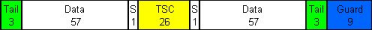
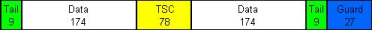

The GSM physical channel is a sequence of timeslots, each of which is divided into 156.25 symbol periods; see "GSM UL Signal Properties". A burst represents the physical content of a timeslot. Standard 3GPP TS 05.02 defines the different burst types together with their bit structure. The GSM multi-evaluation measurement supports all specified uplink burst types.
The GSMK-modulated normal burst is used for data transmission on the traffic channel and on the control channels (except the RACH, PRACH and CPRACH).
The normal burst contains two 57-bit long data fields for the transmission of the user information. The training sequence (TSC) in the center is flanked by two stealing flag bits (S1); each of them is set to 0. The two times 3 tail bits at the beginning and at the end of the burst are all set to 0, the 8.25-bit guard period at the end is transmission-free.

An EDGE burst is an 8PSK-modulated normal burst; see "GSM UL Signal Properties". EDGE bursts are used for data transmission at higher data rates. Due to the higher-order modulation scheme, the bit content of all fields is tripled. The stealing flag bits are not present. All tail bits are set to 1. The length of the guard period is 24.75 bits.

To increase the data rate, EDGE evolution introduces 16-QAM-modulated normal bursts; see "GSM UL Signal Properties". The burst structure is equal to the 8-PSK-modulated normal burst, however, the bit content is multiplied by a factor of 4/3: The burst contains (12 + 232 + 104 + 232 + 36) bits.
The access burst is used by mobile stations for initial random access to the network and for handover. In packet data mode, it is also possible to use access bursts for the transmission of CONTROL_ACK_TYPE messages. Compared to a normal burst, the access burst has an extended guard period (EGuard, 68.25 symbols instead of 8.25 symbols) whereas the useful duration is shortened by 60 symbols. Access bursts are always GMSK-modulated.